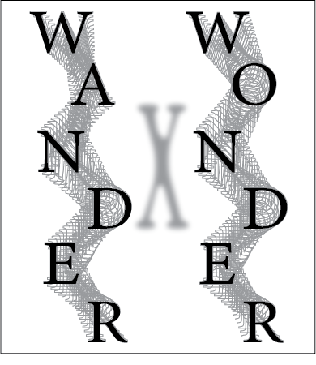

Wander X Wonder
Company Logo Design(Adobe Illustrator)
This project is a unofficial concept logo for a creative architecture, interior, and graphic design studio called Wander X Wonder. The company is based in Honolulu, Hawaii and was founded by Hiroto Suzuki in 2014. This concept logo incorporates the company's creative and sleek features___.